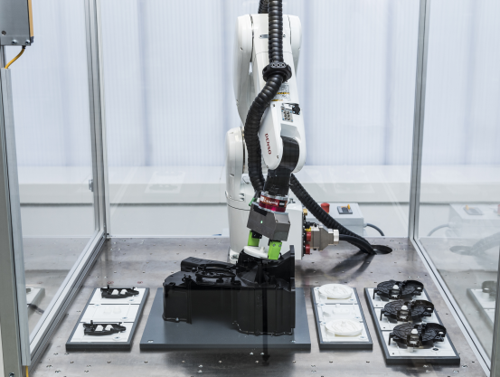

layout: true <div class="header"><img src="https://rosin-project.eu/wp-content/uploads/rosin_ack_logo_wide.png" style="background-color:transparent"/></div> <div class="footer"><img src="https://www.ipa.fraunhofer.de/content/dam/ipa/ipa.svg" /><p>© Fraunhofer IPA</p></div> <div class="triangle"></div> --- # Advanced Manipulation Applications with ROS ## Examples from the ROS-Industrial Consortium <div> <center> <img src="resources/0_robot_looking.png" width="300px"> </center> </div> --- # Contents 1. **Introduction** 1. **Welding** - Fraunhofer IPA 1. **Packing** - Fraunhofer IPA 1. **Scan & Plan** - Southwest Research Institute 1. **Assembly** - Fraunhofer IPA --- <!-- Page 3 --> # Introduction ### When should you use ROS in industrial applications for manipulation? ### What are the challenges? ### How should your applications look like? <!-- When we create a robotic system, there may be many different software components that need to know about the physical characteristics of the robot. All of this information needs to be in one common location, where any software component can reference it. --> --- <!-- Page 4 --> # Introduction ### When should you use ROS in industrial applications for manipulation? **If your application can be solved to satisfaction with existing OEM software, do not use ROS. Here are some indicators that usually push you towards ROS.** <table> <thead> <tr> <th>Indicator</th> <th>Description</th> <th>Decision for ROS</th> </tr> </thead> <tbody> <tr> <td>Application Complexity</td> <td>How complex is your application? Do you need frequent <br/> replanning of trajectories?</td> <td>High</td> </tr> <tr> <td>Scalability</td> <td>How often will you deploy your automation solution? <br/> Will you deploy on robots from different manufacturers?</td> <td>High</td> </tr> <tr> <td>Cycle Times</td> <td>What kind of cycle-times are you looking at?</td> <td> > 5s </td> </tr> <tr> <td>AI Integration</td> <td>Do you want to integrate AI algorithms which need large <br/> amounts of sensor data from the robot cell?</td> <td> Yes </td> </tr> </tbody> </table> --- <!-- Page 5 --> # Introduction ### What are the typical challenges? - **Liability** You are not only liable for the software you write, but also for the open-source software you use in your solution. - **Safety** Open source code is hardly ever certified for safety-critical applications. You need to make sure that your application is safe using traditional means. - **Reliability** Making a Linux system work fulfil reliability requirements requires experts. You need to make sure that your application meats reliability requirements. --- <!-- Page 6 --> # Introduction ### How should your ROS applications look like? - **Reusable** Your applications should be deployed in numbers. This will ensure that you will be able to maintain and improve them in the future. - **Adaptable** Your application should solve one process and be adaptable to different environmental conditions as possible. - **Modular** Your application should be modular. This will allow you to easily add new functionality and to replace existing functionality. --- <!-- Page 7 --> # Welding with ROS ### Motivation **Welding** is a common industrial process. Robot automation solutions exist and are widely used in industry. However, existing solutions require reprogramming and specific jiggs for each new work piece. <br/> Programming requires experts, effort and time. <br/><br/><br/> ### <center> The Goal</center> ### <center> "Make robot welding effortless for single batch production."</center> <!-- It describes how the distribution of the mass will affect rotation --> --- <!-- Page 8 --> # Welding with ROS ### Problems * **Detecting the position of the work piece in the workcell** In traditional welding cells the work piece is placed manually into a jigg, the position of the Jigg is known to the robot. In a single batch production environment the work piece is placed into to the workcell without a jigg. The robot needs to detect the position of the work piece. * **Detecting the weld seam on the work piece** In tradition welding cells the worker has programmed each seam manually either by teach points on the seam or by offline programming. In a single batch production environment the robot needs to detect the seam on the work piece to reduce programing time. * **Calculating a collision free and process optimal trajectory for the welding process** In traditional welding cells the robot is programmed to follow a predefined trajectory. In a single batch production environment the robot needs to calculate a collision free and process optimal trajectory for the welding process. --- <!-- Page 9 --> # Welding with ROS ### Solution * **Detecting the position of the work piece in the workcell** The robot is lead to the work piece by a human operator in free drive mode. * **Detecting the weld seam on the work piece** The robot uses a line laser to detect the seam on the work piece in real-time. * **Calculating a collision free and process optimal trajectory for the welding process** The operator simply has to configure direction, length and process parameters. The robot automatically calculates a collision free and process optimal trajectory for the welding process. --- <!-- Page 10 --> # Welding with ROS ### Video <center> <video width="60%" height="60%" controls> <source src="file:///home/christoph/Takenaka_extern.mp4" type="video/mp4"> Your browser does not support the video tag. </video> </center> --- <!-- Page 10 --> # Welding with ROS ### Video <center> <video width="60%" height="60%" controls> <source src="file:///home/christoph/2022_11_schweissen_09.mp4" type="video/mp4"> Your browser does not support the video tag. </video> </center> --- <!-- Page 11 --> # Welding with ROS ### Sources ** We are on the way of licensing the technology in the second video to two leading welding technology providers. ROS is going to be deployed at scale.** You can find some open source code here: https://github.com/PickNikRobotics/UR10e_welding_demo --- <!-- Page 12 --> # Packing with ROS ### Motivation * If you order from mail order companies such as Amazon or OTTO you will notice that your order is often send in multiple packages or in boxes that are much to empty. * The goal is to pack the products optimally into the boxes to reduce the amount of packaging material and to reduce the shipping costs. ###<center> Our Goal</center> ###<center> "Enable robots to pack packages optimally."</center> --- <!-- Page 13 --> # Packing with ROS ### Problems * **Pick an arbittrary object from a bin** Usually the order is delivered to the packing station in a bin. The robot needs to detect all objects from that bin. * **Detect the pose of the object** The robot needs to detect the exact pose of the object once it is picked from the bin. Only knowing the exact pose it is possible to calculate the robot trajectory to the packing pose in the target box. * **Calculate the trajectory to the target pose** The robot needs to be moved to the target pose with colliding with other objects in the box or the robot cell. --- <!-- Page 13 --> # Packing with ROS ### Solution * **Pick an arbittrary object from a bin** Model-free 3D Bin Picking approach using a 3D camera. * **Detect the pose of the object** The robot uses another 3D camera mounted statically to detect the pose of the object in the gripper. * **Calculate the trajectory to the target pose** We use a model-free bin packing algorithm to calculate the optimal packing pose for the object in the target box. Then we use a state-of-the-art motion planning algorithm to calculate a collision free trajectory to the target pose. --- <!-- Page 14 --> # Packing with ROS ### Video <center> <video width="60%" height="60%" controls> <source src="file:///home/christoph/mixed_packing_videos.mp4" type="video/mp4"> Your browser does not support the video tag. </video> </center> --- # Packing with ROS ## Flexible planning for model-free 3D Bin Packing of unknown arbitrarily shaped objects * Ad-hoc planning based on inline RGB-D images * No CAD model or prior knowledge about objects necessary * Planning time ~50 ms per object * No additional effort due to complex training of DL models * 6-DoF planning in all rotatory degrees of freedom possible * Stability check for planned storage * Option for semantic grouping of similar items in mixed bins ### <center>Currently under test with multiple companies</center> --- <!-- Page 15 --> # Polishing with ROS ### Motivation * Polishing and grinding is a common industrial process and it is often used in places where there is no exact model of the workpiece available - e.g. in repair shops. * These often need to be executed manually by skilled workers. ### <center>Our Goal</center> ### <center>"Enable surface treatment using robots."</center> --- <!-- Page 16 --> # Polishing with ROS ### Problems * **Scan the work piece** The robot needs to scan the work piece to detect the surface that needs to be polished. * **Detect the surface that needs to be polished** The robot needs to detect the surface that needs to be polished. * **Calculate a path on the surface** The robot needs to calculate a path on the surface with the correct process constraints such as contact forces. * **Execute the polishing process** The robot needs to execute the polishing process with the correct process constraints. --- <!-- Page 17 --> # Polishing with ROS ### Solution * **Scan the work piece** The robot uses a 3D camera to scan the work piece and create a point cloud. * **Detect the surface that needs to be polished** We use open3D to extract the surface as a mesh from the point cloud * **Calculate a path on the surface** We use the open sourced noether library to plan the tool paths on the surface. * **Plan the motion and execute the polishing process** Based on the tool paths we plan the motion and execute the polishing process (using tesseract or moveit) --- <!-- Page 18 --> # Polishing with ROS ### Video <center> <iframe width="560" height="315" src="https://www.youtube.com/embed/Pj_NsO22Bws?start=5" title="YouTube video player" frameborder="0" allow="accelerometer; autoplay; clipboard-write; encrypted-media; gyroscope; picture-in-picture; web-share" allowfullscreen></iframe> </center> --- <!-- Page 18 --> # Polishing with ROS ### Sources * Training Materials: https://github.com/ros-industrial-consortium/scan_n_plan_workshop * Video: https://www.youtube.com/watch?v=Pj_NsO22Bws --- <!-- Page 15 --> # Force-controlled Assembly with ROS ### Motivation * Assembly of complex products is a common industrial process. * Assembly automation is often very hard and expensive machines are required for automation. * There is a need for flexible and relatively easy to setup robotics solutions for force controlled assembly. * e.g. for cabling * e.g. for DIN rail assembly (cabinets) --- <!-- Page 16 --> # Force-controlled Assembly with ROS ### Problems * **Main Problem:** Programming force-controlled assembly functions is very hard and time consuming. Existing solutions require highly skilled experts and a lot of time. * **Application Problems:** * Clipping: * Applying the right amount of force to a clip without breaking it * Detecting when a clip is fully inserted into a clip holder. * Cabeling: * Detecting when a cable is fully inserted into a connector. ###<center> Our Goal</center> ###<center> "Enable easy creation of force controlled assembly."</center> --- <!-- Page 17 --> # Force-controlled Assembly with ROS ### Solution .image-right[] **Constraint-based robot programming** 1. Formulation of target state and constraints of the process instead of hard-coded robot trajectory * Examples: Desired target poses, contact forces and directions, etc. 2. Explicit modelling of variant and process parameters * Examples: edges, symmetry axes, gipping points, etc. 3. Robot motion is generated live, based on current variant parameters and sensor measurements --- <!-- Page 18 --> # Force-controlled Assembly with ROS ### Video <center> <video width="60%" height="60%" controls> <source src="file:///home/christoph/325_WAGO_Variantenflexibilität_05_engl.mp4" type="video/mp4"> Your browser does not support the video tag. </video> </center> --- <!-- Page 18 --> # Force-controlled Assembly with ROS ### Video <center> <video width="60%" height="60%" controls> <source src="file:///home/christoph/Rittal_v13b_eng.mov"> Your browser does not support the video tag. </video> </center>